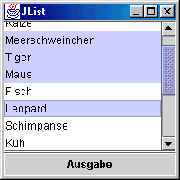
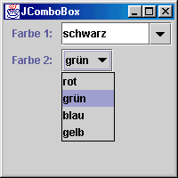

38.3 Listen und Comboboxen
38.3.1 JList
Die Klasse JList
dient dazu, Listen von Werten darzustellen, aus denen der Anwender
einen oder mehrere Einträge auswählen kann. Im Gegensatz
zur AWT-Klasse List
kann sie nicht nur Strings, sondern beliebige Objekte vom generischen
Typ E enthalten. Auch die Darstellung der Listenelemente auf dem Bildschirm
kann weitgehend frei gestaltet werden. Wir wollen uns die wichtigsten
Eigenschaften von JList
ansehen und dazu zunächst mit den Konstruktoren beginnen:
public JList()
public JList(E[] listData)
public JList(Vector<? extends E> listData)
public JList(ListModel<E> dataModel)
|
javax.swing.JList |
Der parameterlose Konstruktor erzeugt eine leere Liste. Wird ein Array
oder Vector
übergeben, erzeugt JList
aus dessen Daten ein Listenmodell und benutzt es zur Darstellung.
Schließlich kann auch direkt eine Instanz der Klasse ListModel
übergeben werden, um den Inhalt der Liste zu definieren.
Selektieren von Elementen
Die meisten Methoden der Klasse JList
haben mit der Selektion der Listenelemente zu tun. Eine Liste kann
sowohl Einzel- als auch Mehrfachselektion unterstützen:
public int getSelectionMode()
public void setSelectionMode(int selectionMode)
|
javax.swing.JList |
Mit setSelectionMode
wird der Selektionsmodus verändert. Als Argument kann eine der
folgenden Konstanten der Klasse ListSelectionModel
übergeben werden:
getSelectionMode
liefert den aktuellen Selektionsmodus. Es gibt eine Reihe von Methoden,
um Informationen über die derzeit selektierten Elemente zu beschaffen:
public int getSelectedIndex()
public int[] getSelectedIndices()
public Object getSelectedValue()
public Object[] getSelectedValues()
public boolean isSelectedIndex(int index)
public boolean isSelectionEmpty()
public int getAnchorSelectionIndex()
public int getLeadSelectionIndex()
|
javax.swing.JList |
getSelectedIndex
liefert den Index des selektierten Elements, falls der Selektionsmodus
SINGLE_SELECTION
ist. Können mehrere Elemente ausgewählt werden, liefert
getSelectedIndices
ein Array mit den Indizes aller selektierten Elemente. getSelectedValue
und getSelectedValues
arbeiten in analoger Weise, liefern aber statt der Indizes die selektierten
Elemente zurück. Mit isSelectedIndex
kann geprüft werden, ob das Element mit dem angegebenen Index
gerade selektiert ist, und isSelectionEmpty
prüft, ob mindestens ein Element selektiert wurde.
Als »Anchor« und »Lead« bezeichnet Swing in einem
zusammenhängend markierten Bereich das jeweils zuerst und zuletzt
markierte Element. Das zuletzt markierte Element ist gleichzeitig
aktuelles Element. Mit getAnchorSelectionIndex
und getLeadSelectionIndex
kann auf »Anchor« und »Lead« zugegriffen werden,
wenn der Selektionsmodus SINGLE_INTERVAL_SELECTION
ist.
Zusätzlich gibt es Methoden, um die Selektion programmgesteuert
zu verändern:
public void clearSelection()
public void setSelectedIndex(int index)
public void setSelectedIndices(int[] indices)
public void setSelectionInterval(int anchor, int lead)
public void addSelectionInterval(int anchor, int lead)
public void removeSelectionInterval(int index0, int index1)
|
javax.swing.JList |
Mit clearSelection
wird die Selektion gelöscht. Mit setSelectedIndex
kann ein einzelnes Element selektiert werden, mit setSelectedIndices
eine Menge von Elementen. Mit setSelectionInterval,
addSelectionInterval
und removeSelectionInterval
können Selektionen auch bereichsweise hinzugefügt und gelöscht
werden.
Wird die Selektion geändert, versendet eine JList
ein ListSelectionEvent
an alle registrierten Listener. Um im Programm auf Änderungen
zu reagieren, ist also lediglich das Interface ListSelectionListener
des Pakets javax.swing.event
zu implementieren und durch Aufruf von addListSelectionListener
bei der JList
zu registrieren. Jede Selektionsänderung führt dann zum
Aufruf der Methode valueChanged.
Den Listeninhalt dynamisch verändern
Etwas mehr Aufwand als beim AWT-Pendant muss getrieben werden, wenn
der Inhalt einer JList
nach der Instanzierung modifiziert werden soll. In diesem Fall kann
nicht mehr mit dem automatisch erzeugten Listenmodell gearbeitet werden,
sondern es muss selbst eines erzeugt werden. Das Modell einer JList
muss stets das Interface ListModel
implementieren und der Liste durch Versenden eines ListDataEvent
jede Datenänderung mitteilen. Eine für viele Zwecke ausreichende
Implementierung steht mit der Klasse DefaultListModel
zur Verfügung. Ihre Schnittstelle entspricht der Klasse Vector
(siehe Abschnitt 15.2)
und alle erforderlichen Änderungsbenachrichtigungen werden automatisch
verschickt. Die wichtigsten Methoden von DefaultListModel
sind:
public void clear()
public void addElement(Object obj)
public void removeElementAt(int index)
public int size()
public Object elementAt(int index)
|
javax.swing.DefaultListModel |
Soll eine Liste mit einem benutzerdefinierten Modell arbeiten, wird
dieses einfach manuell erzeugt und an den Konstruktor übergeben.
Alle Einfügungen, Löschungen und Änderungen von Daten
werden dann an diesem Modell vorgenommen. Durch Aufruf von getModel
kann auf einfache Weise auf das Modell einer JList
zugegriffen werden.
Beispiel
Zum Abschluss wollen wir uns ein Beispiel ansehen. Das folgende Programm
instanziert eine JList
durch Übergabe eines String-Arrays. Bei jedem Drücken des
Buttons »Ausgabe« gibt es die Liste der selektierten Elemente
auf der Konsole aus:
001 /* Listing3810.java */
002
003 import java.awt.*;
004 import java.awt.event.*;
005 import javax.swing.*;
006
007 public class Listing3810
008 extends JFrame
009 implements ActionListener
010 {
011 static final String[] DATA = {
012 "Hund", "Katze", "Meerschweinchen", "Tiger", "Maus",
013 "Fisch", "Leopard", "Schimpanse", "Kuh", "Pferd",
014 "Reh", "Huhn", "Marder", "Adler", "Nilpferd"
015 };
016
017 private JList<String> list;
018
019 public Listing3810()
020 {
021 super("JList");
022 addWindowListener(new WindowClosingAdapter(true));
023 Container cp = getContentPane();
024 //Liste
025 list = new JList<String>(DATA);
026 list.setSelectionMode(
027 ListSelectionModel.MULTIPLE_INTERVAL_SELECTION
028 );
029 list.setSelectedIndex(2);
030 cp.add(new JScrollPane(list), BorderLayout.CENTER);
031 //Ausgabe-Button
032 JButton button = new JButton("Ausgabe");
033 button.addActionListener(this);
034 cp.add(button, BorderLayout.SOUTH);
035 }
036
037 public void actionPerformed(ActionEvent event)
038 {
039 String cmd = event.getActionCommand();
040 if (cmd.equals("Ausgabe")) {
041 System.out.println("---");
042 ListModel<String> lm = list.getModel();
043 int[] sel = list.getSelectedIndices();
044 for (int i = 0; i < sel.length; ++i) {
045 String value = lm.getElementAt(sel[i]);
046 System.out.println(" " + value);
047 }
048 }
049 }
050
051 public static void main(String[] args)
052 {
053 Listing3810 frame = new Listing3810();
054 frame.setLocation(100, 100);
055 frame.setSize(200, 200);
056 frame.setVisible(true);
057 }
058 }
|
Listing3810.java |
Listing 38.10: Die Klasse JList
Die Programmausgabe ist:

Abbildung 38.8: Die Klasse JList
38.3.2 JComboBox
Eine JComboBox
ist das Swing-Pendant zur AWT-Klasse Choice.
Es stellt eine Kombination aus Textfeld und Liste dar. Die Liste ist
normalerweise unsichtbar und wird vom Anwender nur dann geöffnet,
wenn er einen Wert daraus auswählen will. Sie erlaubt grundsätzlich
nur einfache Selektion. Die wichtigsten Konstruktoren von JComboBox
sind:
public JComboBox(Object[] items)
public JComboBox(Vector items)
public JComboBox(ComboBoxModel aModel)
|
javax.swing.JComboBox |
Sie entsprechen den korrespondierenden Konstruktoren der Klasse JList.
Ein wichtiges Merkmal einer JComboBox
ist die Möglichkeit, das Textfeld editieren zu können oder
nicht. Ist das der Fall, kann der Anwender auch Werte eingeben, die
nicht in der Liste stehen; andernfalls ist er auf Listenwerte beschränkt.
Mit den Methoden setEditable
und isEditable
kann auf diese Eigenschaft zugegriffen werden:
Zur Abfrage oder Auswahl des selektierten Elements stehen folgende
Methoden zur Verfügung:
public Object getSelectedItem()
public void setSelectedItem(Object anObject)
public int getSelectedIndex()
public void setSelectedIndex(int anIndex)
|
javax.swing.JComboBox |
Mit getSelectedItem
kann das selektierte Element abgefragt werden, mit setSelectedItem
kann es gesetzt werden. Wurde bei einer editierbaren JComboBox
vom Anwender ein Wert eingegeben, der nicht in der Liste steht, liefert
getSelectedItem
diesen Wert. Mit getSelectedIndex
und setSelectedIndex
kann auch über die Indizes der Liste auf deren Elemente zugegriffen
werden. getSelectedIndex
liefert -1, wenn vom Anwender ein Wert eingegeben wurde, der nicht
in der Liste steht.
Im Gegensatz zu JList
stellt JComboBox
auch einige Methoden zur Verfügung, mit denen die Elemente der
Liste dynamisch verändert werden können:
public void addItem(Object anObject)
public void insertItemAt(Object anObject, int index)
public void removeItem(Object anObject)
public void removeItemAt(int anIndex)
public void removeAllItems()
|
javax.swing.JComboBox |
Mit addItem
wird ein neues Element an das Ende der Liste angehängt, mit insertItemAt
wird es an einer beliebigen Position eingefügt. removeItem
entfernt das angegebene Element, removeItemAt
das Element mit dem angegebenen Index. removeAllItems
entfernt alle Elemente aus der Liste.
Jedes Mal, wenn ein anderes Element selektiert wird, sendet eine JComboBox
ein ItemEvent
an registrierte ItemListener
(und zwar sowohl für das deselektierte als auch für das
selektierte Element). Nach Abschluss der Selektion oder wenn der Anwender
in einer editierbaren JComboBox
einen Wert per Hand eingegeben hat, wird zusätzlich ein ActionEvent
an registrierte ActionListener
versendet.
Das folgende Programm enthält zwei Comboboxen, von denen die
erste editierbar ist und die zweite nicht. Ihre Elemente stammen aus
einem String-Array
mit Farbwerten, das direkt an den Konstruktor übergeben wird:
001 /* Listing3811.java */
002
003 import java.awt.*;
004 import java.awt.event.*;
005 import javax.swing.*;
006
007 public class Listing3811
008 extends JFrame
009 {
010 private static final String[] COLORS = {
011 "rot", "grün", "blau", "gelb"
012 };
013
014 public Listing3811()
015 {
016 super("JComboBox");
017 addWindowListener(new WindowClosingAdapter(true));
018 Container cp = getContentPane();
019 for (int i = 1; i <= 2; ++i) {
020 JPanel panel = new JPanel();
021 panel.setLayout(new FlowLayout(FlowLayout.LEFT, 10, 2));
022 panel.add(new JLabel("Farbe " + i + ":"));
023 JComboBox combo = new JComboBox(COLORS);
024 combo.setEditable(i == 1);
025 panel.add(combo);
026 cp.add(panel, i == 1 ? BorderLayout.NORTH : BorderLayout.CENTER);
027 }
028 }
029
030 public static void main(String[] args)
031 {
032 Listing3811 frame = new Listing3811();
033 frame.setLocation(100, 100);
034 frame.setSize(200, 200);
035 frame.setVisible(true);
036 }
037 }
|
Listing3811.java |
Listing 38.11: Die Klasse JComboBox
Die Programmausgabe ist:

Abbildung 38.9: Die Klasse JComboBox